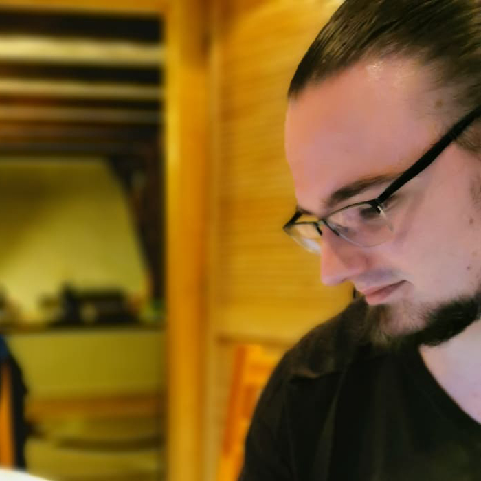

-
Papp Barnabás
- Hobbim: Gitározás, olvasás, társasjátékok
- Miért jelentkeztem a frontendre? A fejlődési lehetőség, hosszú távú munkalehetőség
- Legnagyobb cél: Boldog család és békés élet
- Ami tetszik a programozásban: A puzzle-feeling.
- Legjobb tulajdonság: Empatikusság és segítőkészség
Barna vagyok, Budapesten élek. Könyvtáros szakon végeztem, emellett korábban gitártanárkodtam. A képzésen szeretném kibővíteni és elmélyíteni a Front-end-es tudásomat - a képzés után pedig fejlesztőként szeretnék elhelyezkedni.